Prática 1.4 — Refratometria (Índice de Refração e Refração Molar)
Dois líquidos incolores
0:00 · 91s · 9 ações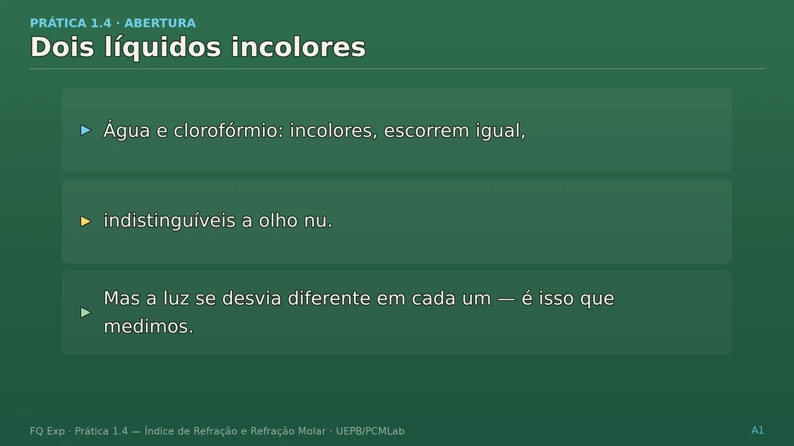
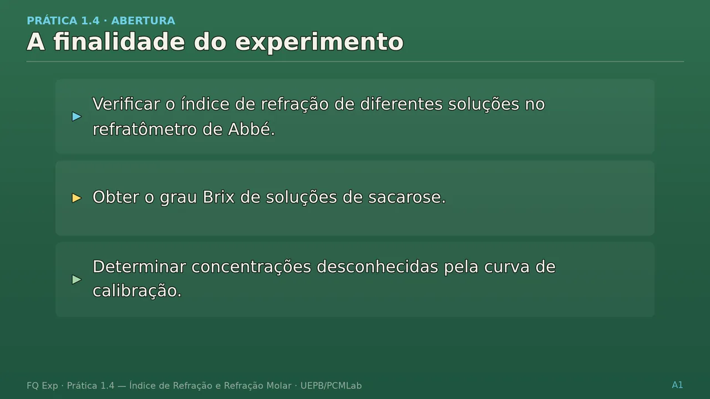
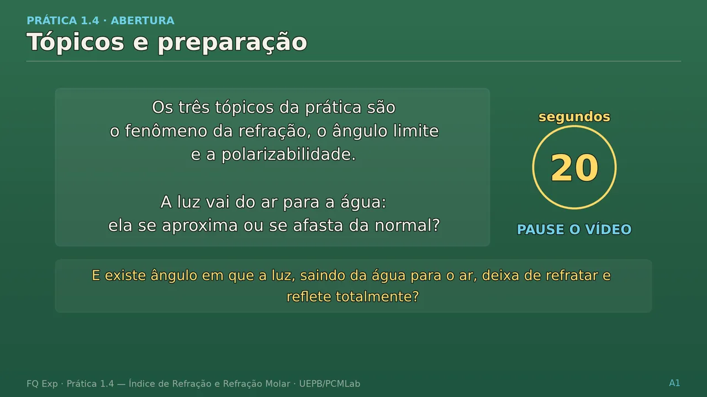
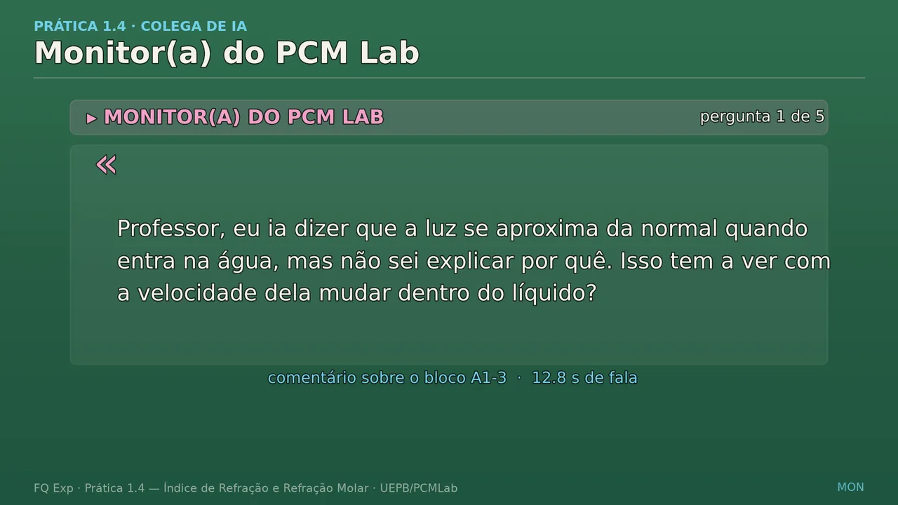
Dois frascos transparentes: água e clorofórmio. São líquidos incolores, escorrem igual, e a olho nu você não distingue um do outro. Mas a luz se desvia de forma bem diferente em cada um: a água tem índice um vírgula três três dois nove nove, e o clorofórmio, um vírgula quatro quatro. É esse desvio que medimos.
A finalidade do experimento tem três partes: verificar o índice de refração de diferentes soluções no refratômetro de Abbé; obter o grau Brix de soluções de sacarose; e determinar concentrações desconhecidas pela curva de calibração construída com as próprias medidas.
Os três tópicos que sustentam a prática são o fenômeno da refração, o ângulo limite de incidência e a polarizabilidade. Antes de seguir: se a luz passa do ar para a água, ela se aproxima ou se afasta da normal? E existe ângulo em que a luz, tentando sair da água para o ar, deixa de refratar e reflete totalmente?
PAUSE E PENSE Pause o vídeo e responda antes de continuar.
▸ MONITOR(A) DO PCM LAB: Professor, eu ia dizer que a luz se aproxima da normal quando entra na água, mas não sei explicar por quê. Isso tem a ver com a velocidade dela mudar dentro do líquido?
O fenômeno da refração
1:31 · 148s · 8 ações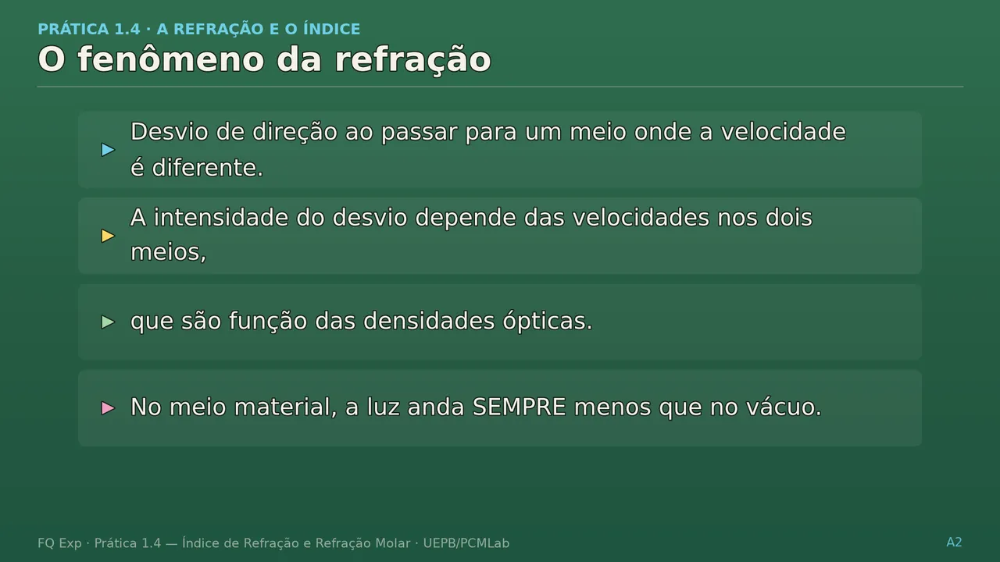
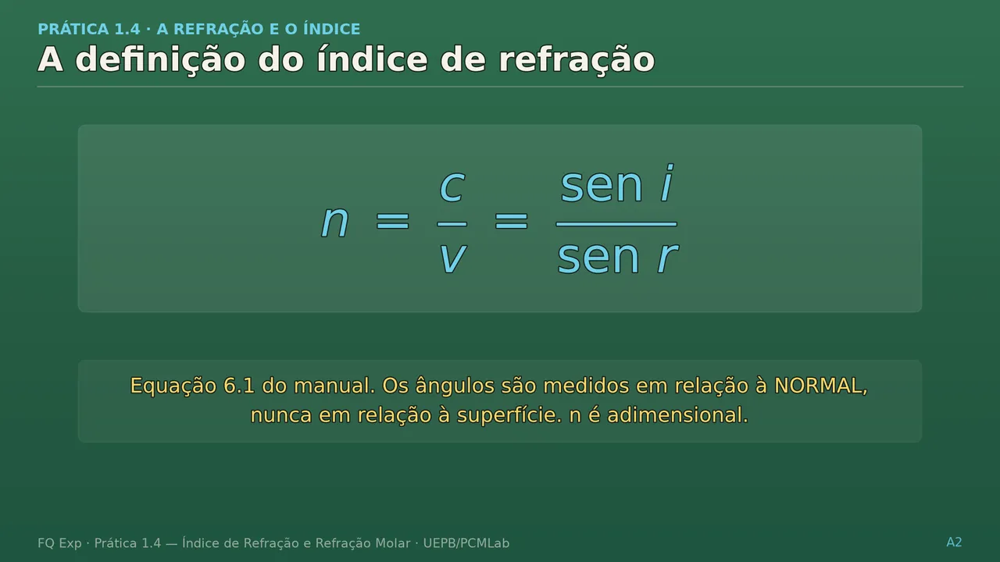
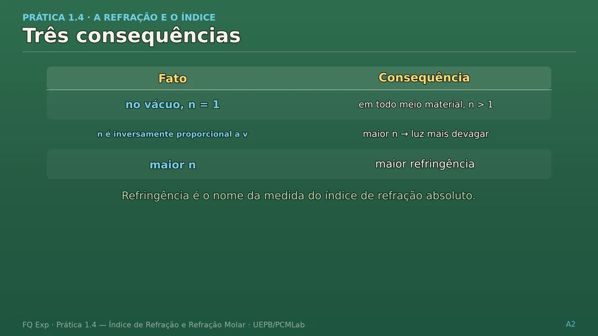
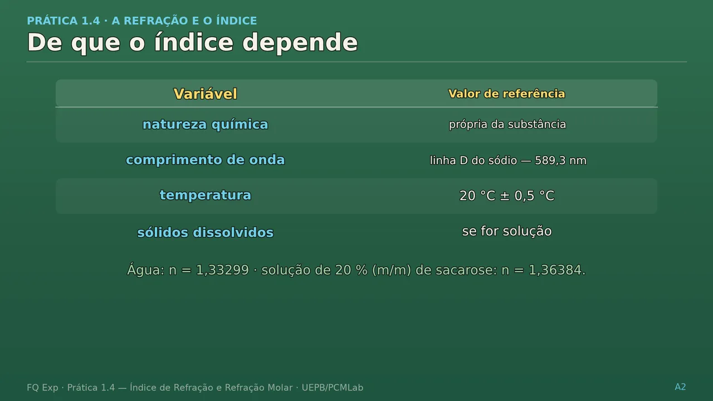
Refração é o desvio de direção que a radiação sofre ao passar para um meio onde sua velocidade de propagação é diferente. A intensidade do desvio depende das velocidades da luz nos dois meios, e essas velocidades são função das densidades ópticas. Note: a velocidade da luz em qualquer meio material é sempre menor que no vácuo.
O índice de refração tem duas definições equivalentes: a razão entre a velocidade da luz no vácuo e a velocidade na substância, e a razão entre o seno do ângulo de incidência e o seno do ângulo de refração — ambos medidos em relação à normal, nunca à superfície.
Três consequências. O índice absoluto do vácuo vale exatamente um, e em qualquer outro meio é maior que um. O índice é inversamente proporcional à velocidade: quanto maior o índice, mais devagar a luz anda ali. E o meio de maior índice tem maior refringência — refringência é o nome da medida do índice de refração absoluto.
O índice varia com a natureza química, com o comprimento de onda, com a temperatura e com os sólidos dissolvidos. Por isso as condições se declaram: linha D do sódio, quinhentos e oitenta e nove vírgula três nanômetros, a vinte graus mais ou menos meio grau. Assim a água vale um vírgula três três dois nove nove, e uma solução com vinte por cento de sacarose vale um vírgula três seis três oito quatro.
Lei de Snell-Descartes
3:58 · 129s · 8 ações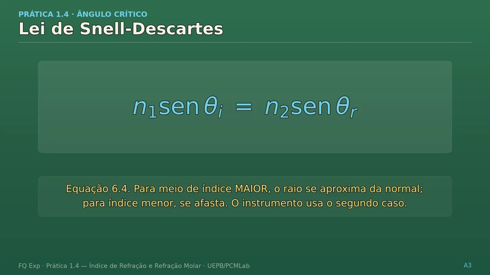
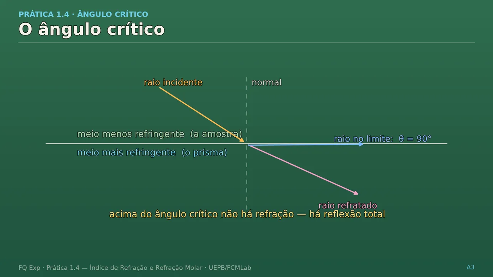
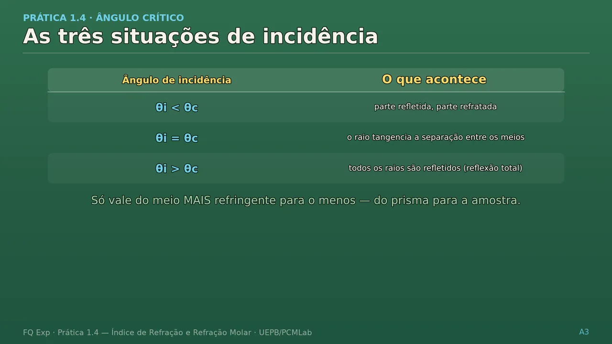
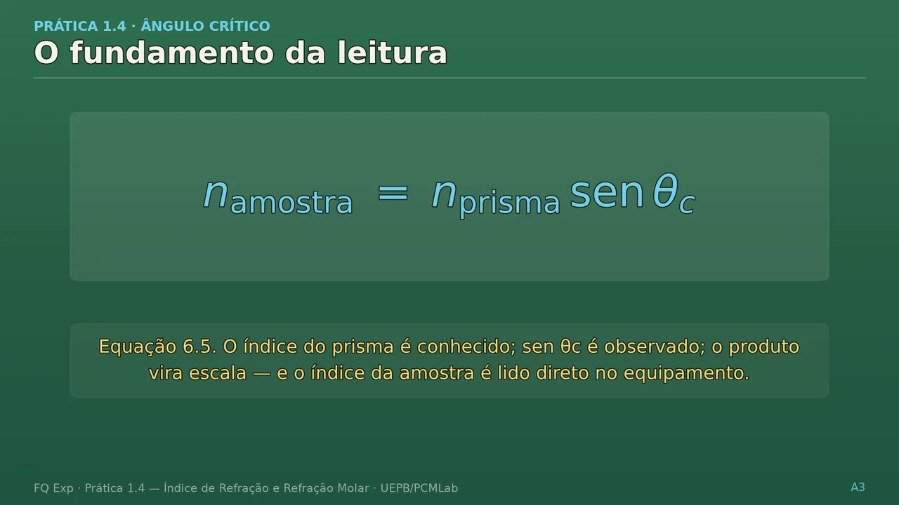
A lei da refração é a de Snell-Descartes: índice do primeiro meio vezes seno do ângulo de incidência é igual ao índice do segundo vezes seno do ângulo de refração. Indo para um meio de índice maior, o raio se aproxima da normal; para índice menor, se afasta. O caso do instrumento é o segundo.
Aumentando o ângulo de incidência, o de refração também cresce. Chega um ponto em que o raio refratado sai tangenciando a superfície — o ângulo de refração chega a noventa graus. É o ângulo crítico, o maior ângulo capaz de produzir refração. Além dele não há refração: há reflexão total.
Três situações, e vale desenhar as três. Ângulo menor que o crítico: parte da luz é refletida e parte é refratada. Igual ao crítico: o raio tangencia a separação entre os meios. Maior que o crítico: todos os raios são refletidos. E há uma restrição — a propriedade só vale indo do meio mais refringente para o menos refringente, do prisma para a amostra.
Isso é o fundamento da leitura. O índice do prisma é conhecido, o seno do ângulo limite é observado, e o produto entre os dois é transformado numa escala. Assim o índice da amostra é lido direto no equipamento — o aparelho já converteu o ângulo.
Campo claro, campo escuro, quatro partes
6:08 · 162s · 10 ações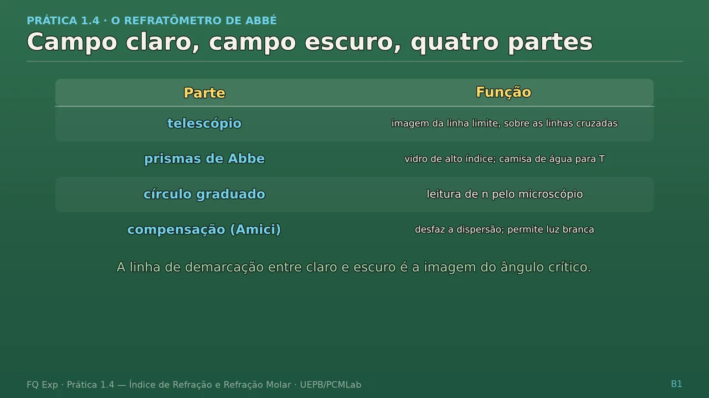
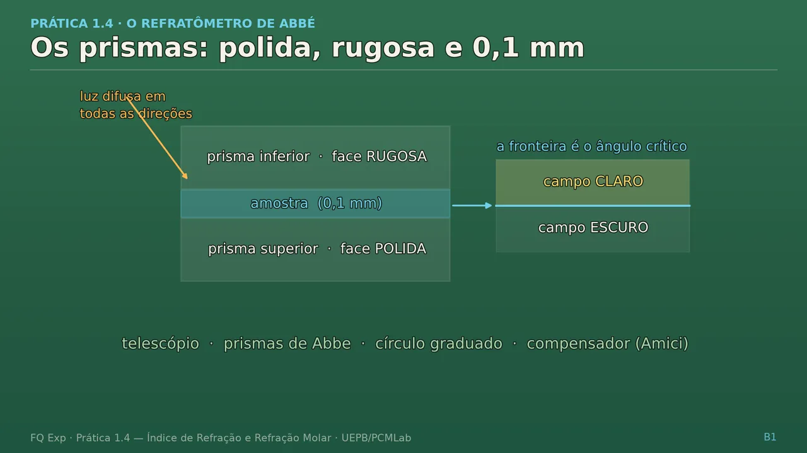
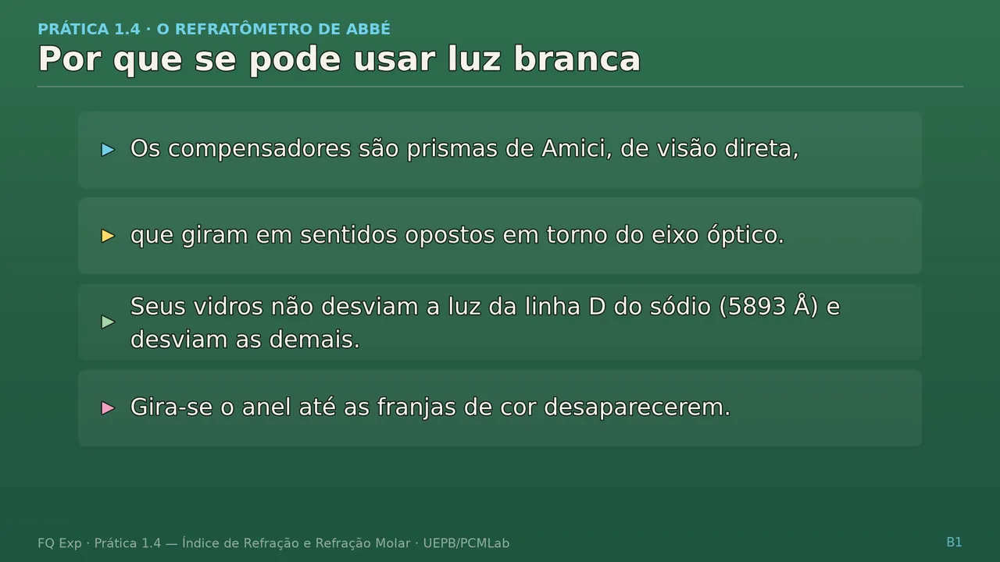
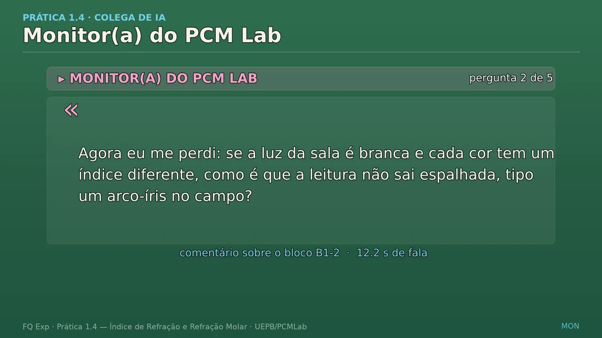
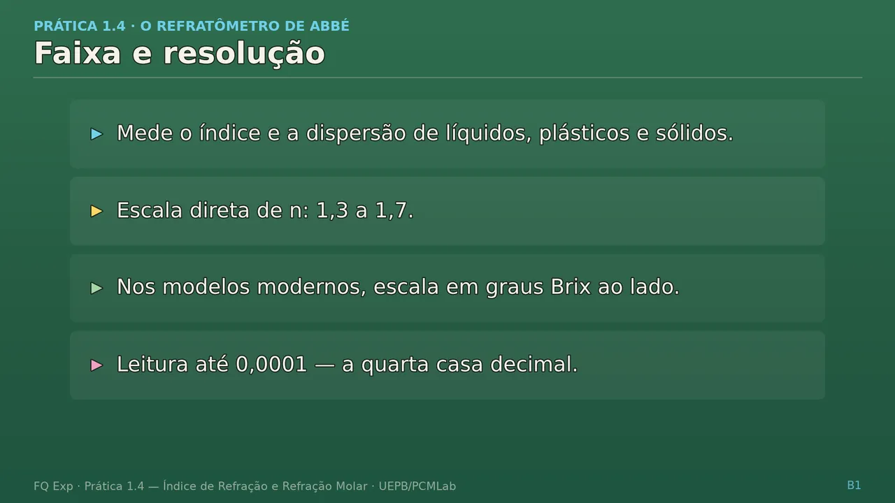
No telescópio do refratômetro de Abbé, o campo mostra uma região clara e outra escura, e a linha de demarcação entre elas corresponde ao ângulo crítico. São quatro partes: o telescópio, os prismas de Abbe, o círculo graduado de cristal com microscópio de leitura, e os prismas de compensação.
O telescópio tem objetiva, ocular e um disco com linhas cruzadas no plano focal: ele forma a imagem da linha limite exatamente nesse plano. Os prismas de Abbe são dois prismas de vidro de alto índice, numa cavidade com camisa de água para controlar a temperatura. A face superior é polida; a inferior é rugosa, e serve para dirigir a luz a todas as direções possíveis. Entre os dois há um espaço de zero vírgula um milímetro, onde vai o líquido.
Os prismas de compensação são de Amici, de visão direta, e giram em sentidos opostos. É isso que permite usar luz branca: embora a luz seja branca, o índice medido é o da linha D do sódio, com cinco mil oitocentos e noventa e três angströms, porque os vidros dos compensadores não desviam essa luz e desviam as demais. Gira-se o anel até as franjas de cor sumirem.
▸ MONITOR(A) DO PCM LAB: Agora eu me perdi: se a luz da sala é branca e cada cor tem um índice diferente, como é que a leitura não sai espalhada, tipo um arco-íris no campo?
O instrumento mede o índice e a dispersão de líquidos, plásticos e sólidos, e lê o índice direto numa escala de um vírgula três a um vírgula sete. Os modelos modernos trazem, ao lado, a escala em graus Brix. A leitura é fina: o manual registra que se lê até zero vírgula zero zero zero um, a quarta casa decimal.
O que é polarizabilidade
8:50 · 159s · 10 ações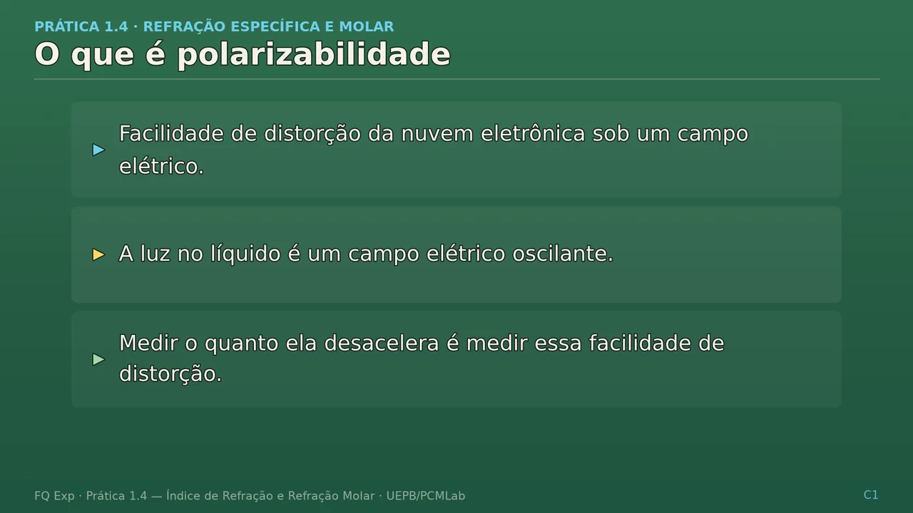
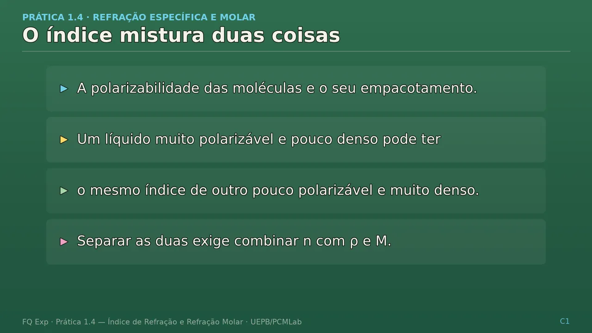
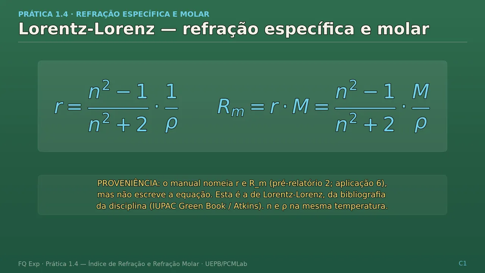
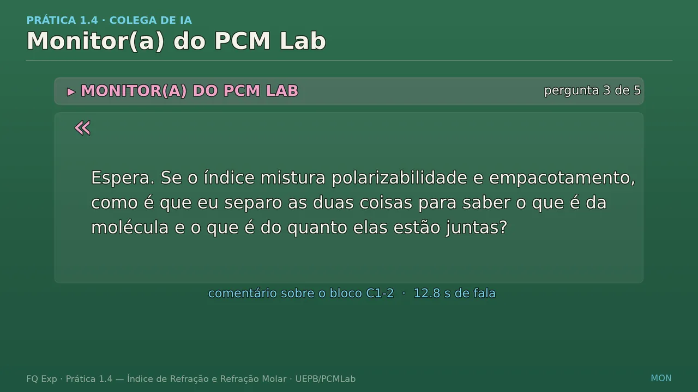
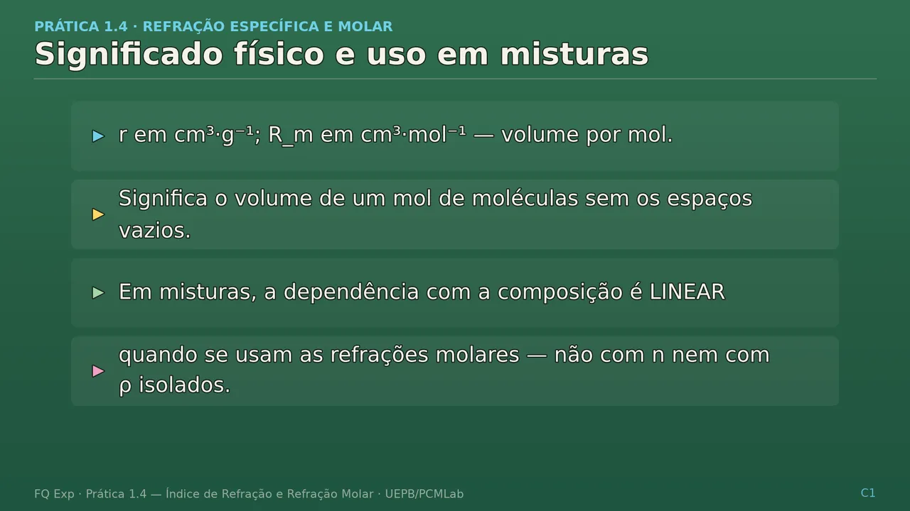
Polarizabilidade é a facilidade de distorção da nuvem eletrônica da molécula sob um campo elétrico. Como a luz que atravessa o líquido é exatamente um campo elétrico oscilante, medir o quanto ela desacelera é medir o quanto as nuvens eletrônicas daquele líquido se deixam distorcer.
Só que o índice mistura duas coisas: a polarizabilidade e o empacotamento. Um líquido muito polarizável e pouco denso pode ter o mesmo índice de outro pouco polarizável e muito denso. Separar as duas exige combinar o índice com a massa específica e a massa molar.
Um aviso de proveniência: o manual nomeia a refração específica e a molar — pede a diferença entre elas e o significado físico das unidades — mas não escreve a equação. A equação é a de Lorentz-Lorenz, da bibliografia da disciplina. A refração específica é n ao quadrado menos um, sobre n ao quadrado mais dois, vezes o inverso da massa específica, em centímetro cúbico por grama; multiplicada pela massa molar, dá a refração molar.
▸ MONITOR(A) DO PCM LAB: Espera. Se o índice mistura polarizabilidade e empacotamento, como é que eu separo as duas coisas para saber o que é da molécula e o que é do quanto elas estão juntas?
A refração molar tem dimensão de volume por mol — centímetro cúbico por mol — e significa o volume de um mol de moléculas sem os espaços vazios. E o manual registra a propriedade que a torna útil em misturas: misturando dois líquidos puros, a dependência com a composição é linear quando se usam as refrações molares — o que não vale para o índice nem para a massa específica isolados.
O índice de Brix
11:29 · 167s · 6 ações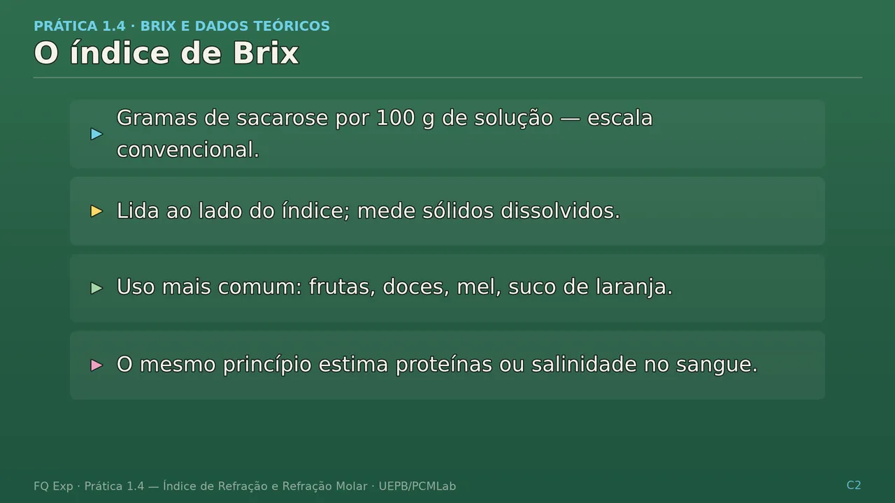
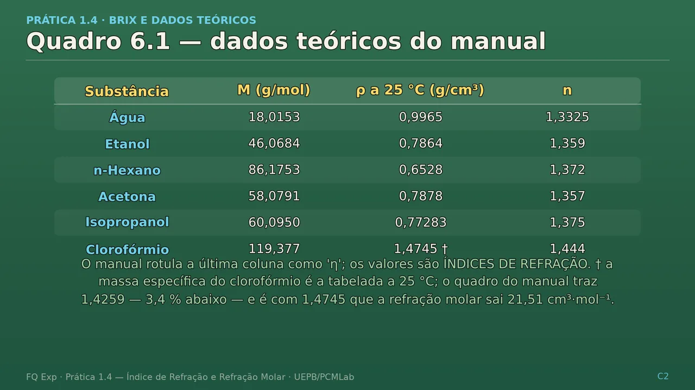
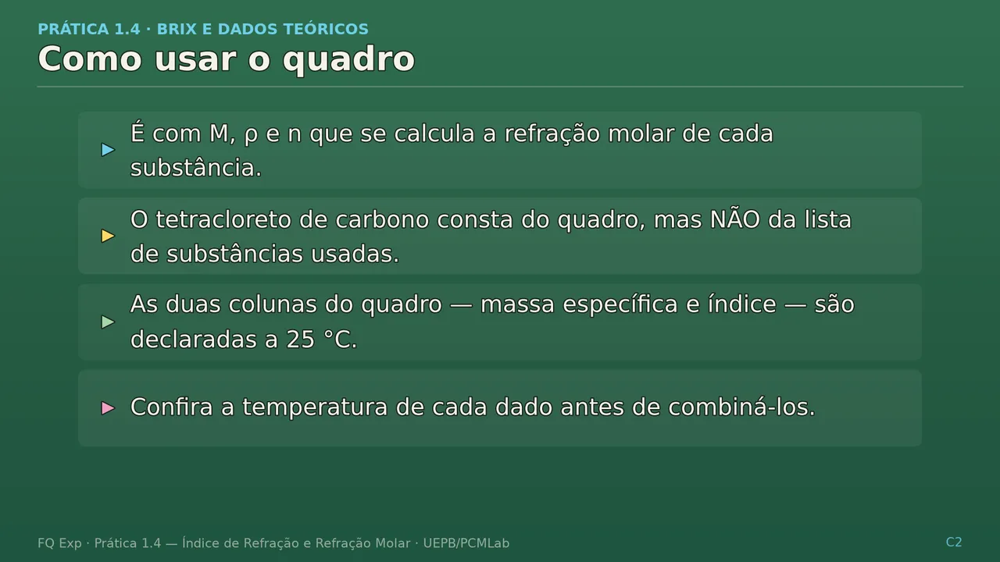
O índice de Brix é o número de gramas de sacarose por cem gramas de solução. É uma escala convencional, lida ao lado do índice, e serve para o teor de sólidos dissolvidos: é o uso mais comum da refratometria, em frutas, doces, mel, suco. O mesmo princípio estima proteínas ou salinidade no sangue.
O manual traz um quadro de dados teóricos com massa molar, massa específica a vinte e cinco graus e índice de refração. Água: dezoito vírgula zero um cinco; zero vírgula nove nove seis cinco; índice um vírgula três três dois cinco. Etanol: quarenta e seis vírgula zero seis oito; zero vírgula sete oito seis quatro; um vírgula três cinco nove. n-Hexano: oitenta e seis vírgula um sete cinco; zero vírgula seis cinco dois oito; um vírgula três sete dois. Clorofórmio: cento e dezenove vírgula três sete sete; um vírgula quatro sete quatro cinco — e não o um vírgula quatro dois cinco nove do manual, três por cento baixo; índice um vírgula quatro quatro quatro.
O quadro ainda traz acetona, com cinquenta e oito vírgula zero oito, zero vírgula sete oito sete oito e índice um vírgula três cinco sete; e isopropanol, com sessenta vírgula nove cinco, zero vírgula sete sete dois oito e um vírgula três sete cinco. É com massa molar, massa específica e índice que se calcula a refração molar. Dois avisos: o tetracloreto de carbono consta do quadro mas não está na lista de substâncias usadas; e as duas colunas do quadro, massa específica e índice, são declaradas a vinte e cinco graus: o índice da água, um vírgula três três dois cinco, é o de vinte e cinco, e o um vírgula três três dois nove nove do corpo do manual é o de vinte. Confira a temperatura de cada dado antes de combiná-los.
As substâncias usadas
14:16 · 176s · 10 ações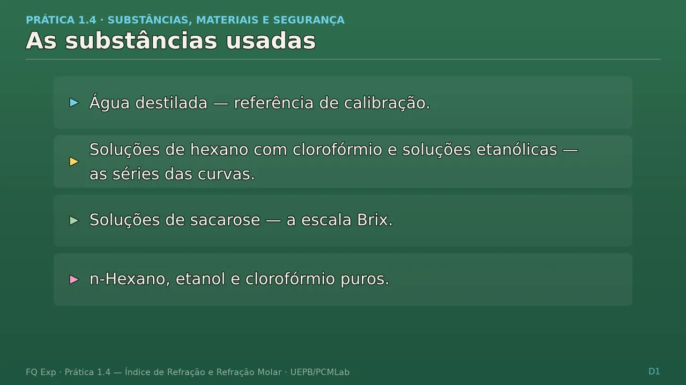
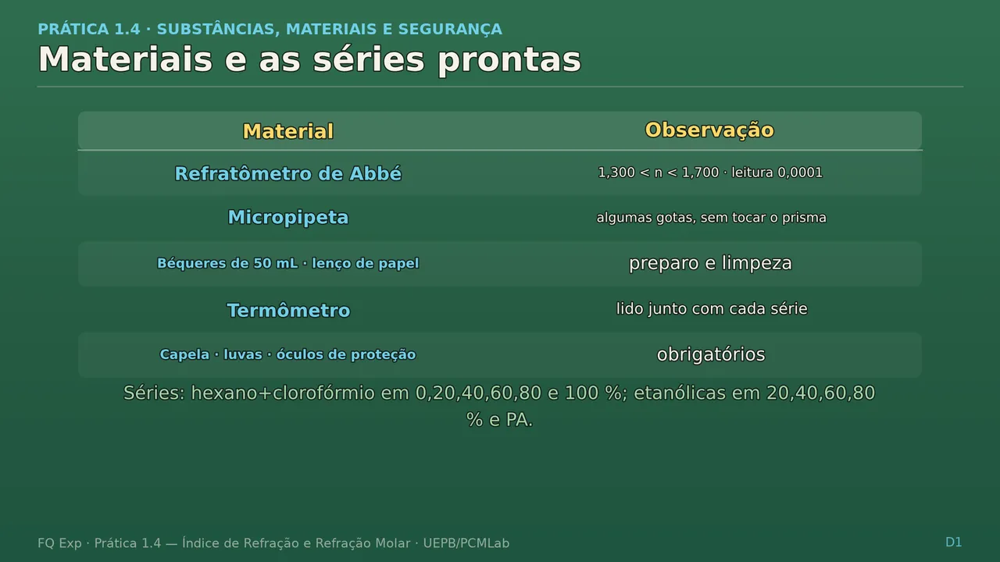
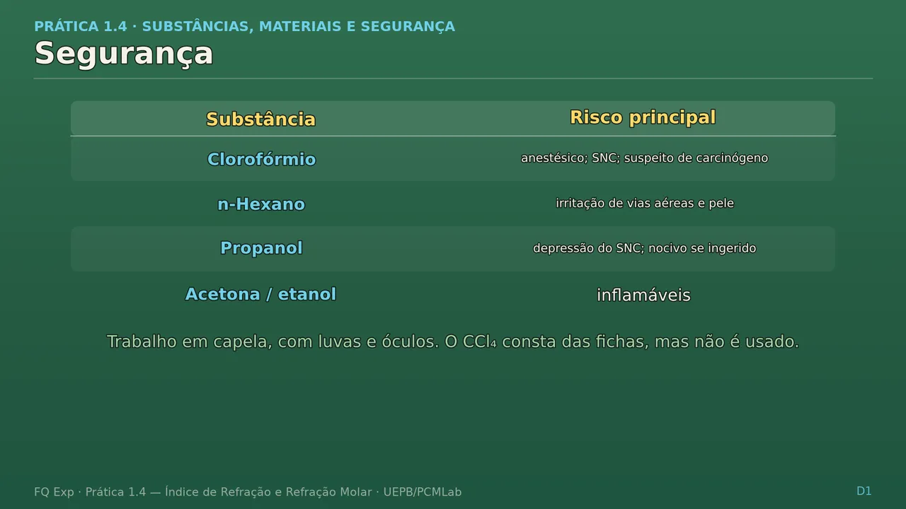
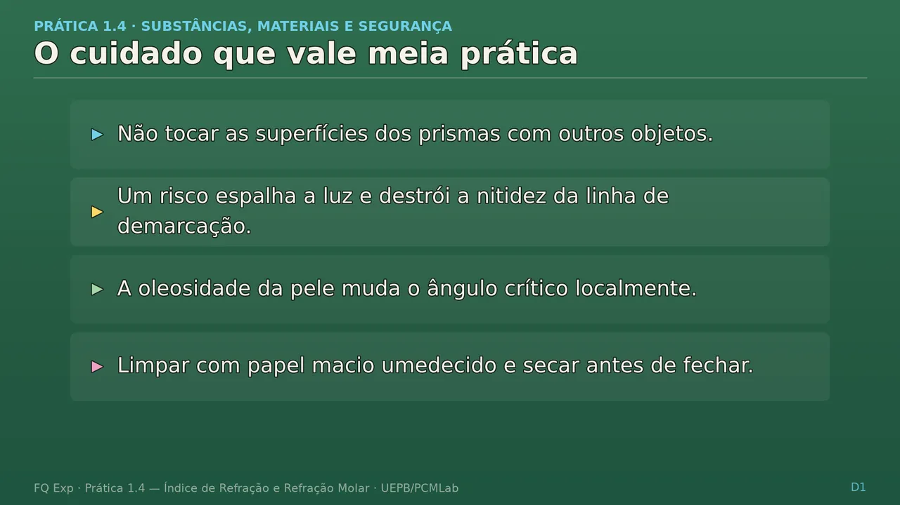
As substâncias usadas são água destilada; soluções etanólicas e de sacarose; soluções de hexano com clorofórmio; n-hexano; etanol; e clorofórmio. A água é a referência de calibração; os sistemas hexano com clorofórmio e as soluções etanólicas formam as séries das curvas; e as soluções de sacarose dão a escala Brix.
O material é refratômetro de Abbé, micropipeta, béqueres de cinquenta mililitros, lenço de papel, termômetro, luvas apropriadas, capela e óculos de proteção. As séries vêm prontas em cinco pontos: hexano com clorofórmio em zero, vinte, quarenta, sessenta, oitenta e cem por cento; e soluções etanólicas em vinte, quarenta, sessenta e oitenta por cento, mais o etanol puro.
Segurança, porque estas substâncias não são inofensivas. O clorofórmio age como anestésico, irrita as vias respiratórias e o sistema nervoso central, causa sonolência e vertigem, e é suspeito de ser carcinógeno; a exposição prolongada atinge fígado, rins e coração. O n-hexano irrita vias aéreas e pele. O propanol deprime o sistema nervoso central e é nocivo se ingerido. Tudo em capela, com luvas e óculos.
Um cuidado de bancada que vale por metade da prática: não tocar as superfícies dos prismas com outros objetos. Um risco espalha a luz e destrói a nitidez da linha, e a oleosidade da pele muda o ângulo crítico localmente. Limpe com papel macio umedecido, conforme o procedimento, e seque antes de fechar. E note: o tetracloreto de carbono aparece nas fichas do manual, mas não entre as substâncias usadas — ele é tóxico para fígado, rins e nervo óptico.
▸ MONITOR(A) DO PCM LAB: Professor, e na hora de limpar o prisma entre uma amostra e outra? Eu passo o papel direto na superfície, ou tem um jeito certo de fazer isso sem riscar?
O procedimento do manual, em sete passos
17:12 · 124s · 8 ações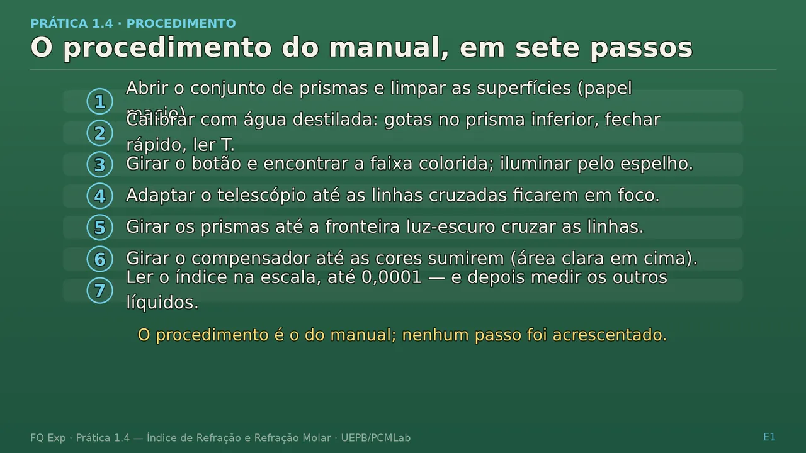
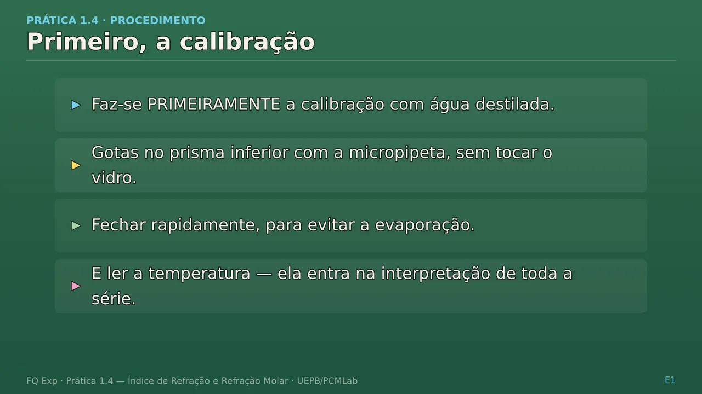
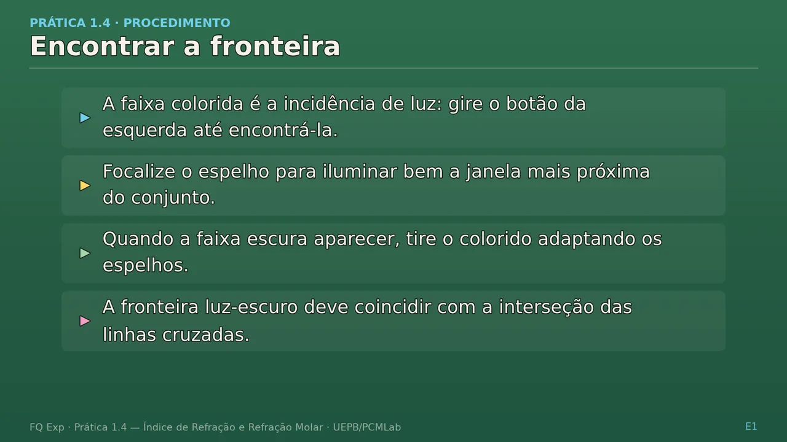
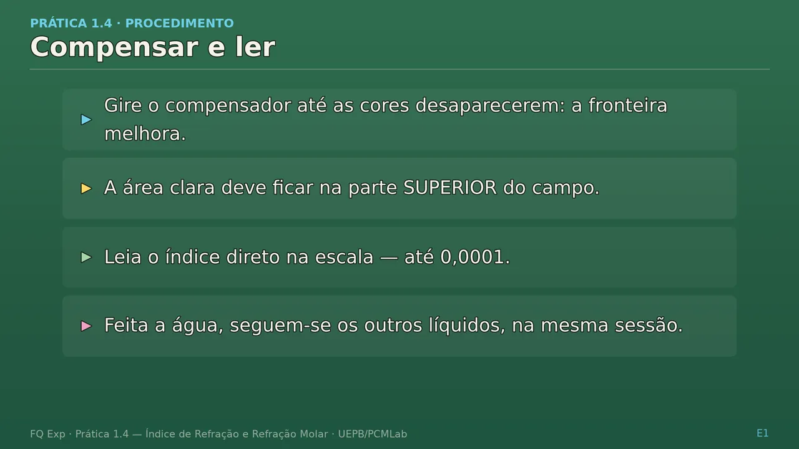
O procedimento, passo a passo. Primeiro: abra o conjunto de prismas com o botão menor da direita, deixe o bloco bem plano, limpe as superfícies com papel macio umedecido e seque bem. Não toque as superfícies com outros objetos.
Segundo, e é o passo que ancora tudo: faz-se primeiramente a calibração com água destilada. Com a micropipeta, coloque algumas gotas no prisma inferior sem tocar o vidro, e feche rapidamente para evitar a evaporação. Depois, leia a temperatura. A água é o padrão de calibração da sessão.
Terceiro: olhando pelo ocular, procure a faixa colorida, que é a incidência de luz, girando o botão da esquerda para os lados até encontrá-la, e focalize o espelho para iluminar bem a janela mais próxima. Quarto: adapte o telescópio até que as linhas cruzadas estejam em foco.
Quinto: quando a faixa escura aparecer, tire o colorido adaptando os espelhos, e gire os prismas até a fronteira luz-escuro coincidir com a interseção das linhas cruzadas. Sexto: gire o compensador até as cores sumirem — a área clara deve ficar na parte superior do campo. Sétimo: leia o índice direto na escala, até zero vírgula zero zero zero um. Feita a água, medem-se os outros líquidos.
Série 1 — hexano + clorofórmio
19:16 · 122s · 8 ações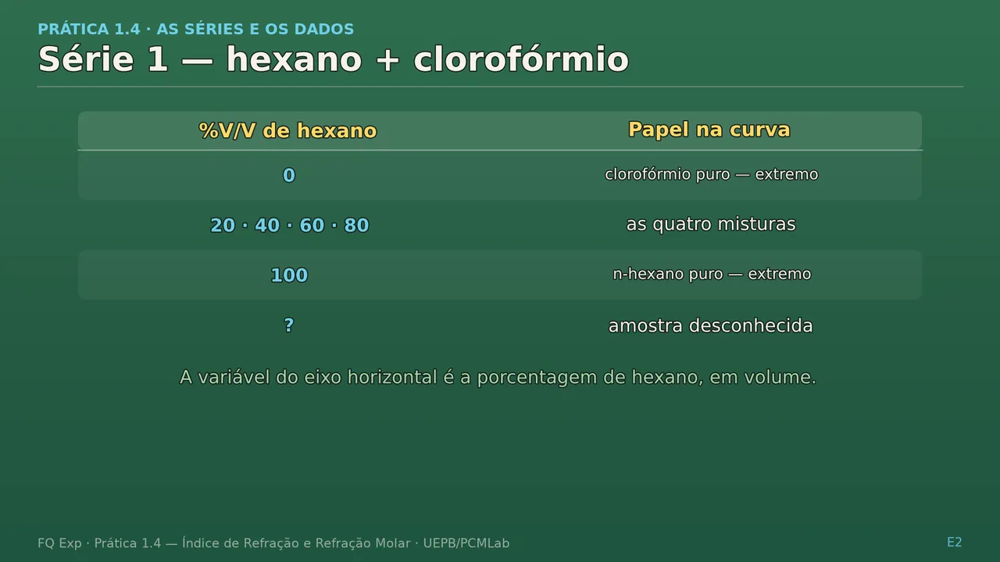
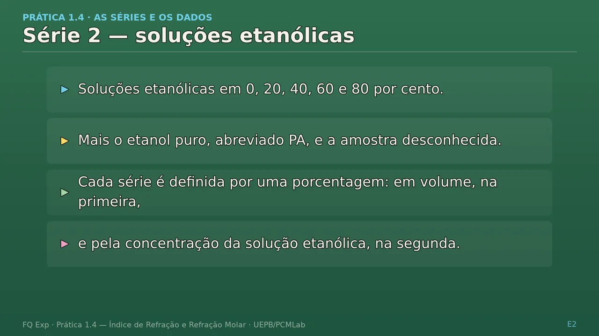
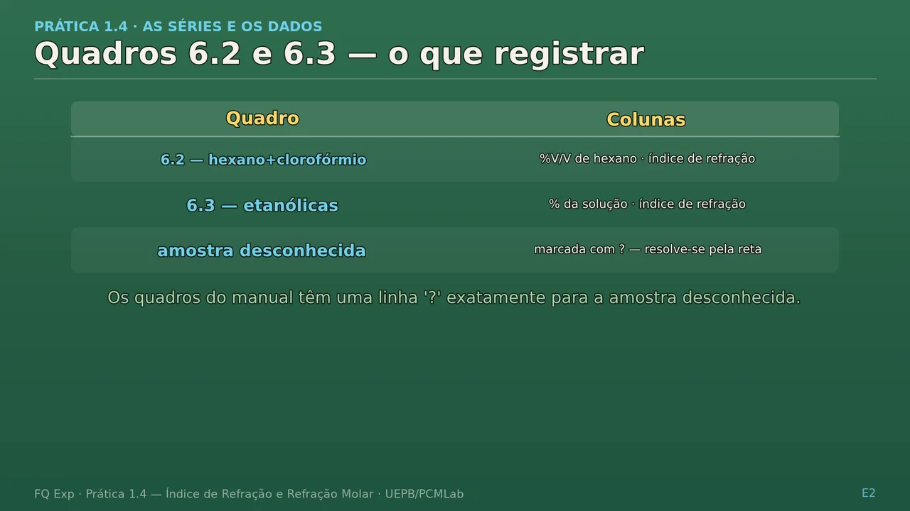
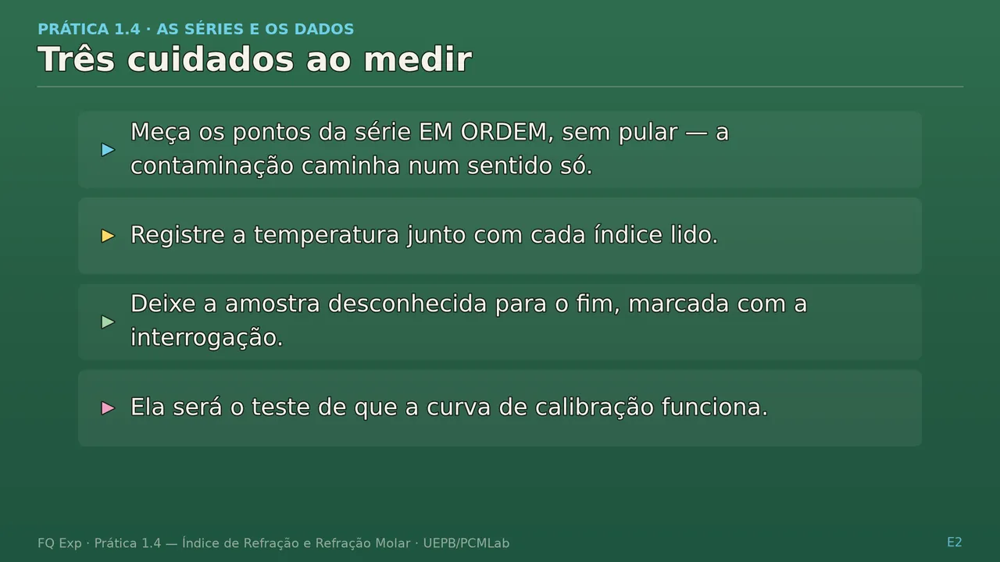
As séries vêm preparadas, e importa saber o que varia. A primeira é de soluções de hexano com clorofórmio, em porcentagem volume por volume de hexano: zero, vinte, quarenta, sessenta, oitenta e cem. Os extremos são os líquidos puros, e os intermediários são as misturas.
A segunda é das soluções etanólicas, em porcentagem: zero, vinte, quarenta, sessenta, oitenta e o etanol puro. Repare que cada série é definida por uma porcentagem — a primeira em volume, a segunda pela concentração da solução etanólica — e é essa a variável que entra no eixo horizontal da curva.
Os dados vão para dois quadros. No das soluções de hexano com clorofórmio, anota-se a porcentagem de hexano e o índice correspondente, com uma linha para a amostra desconhecida, marcada com interrogação. No das soluções etanólicas, a mesma estrutura. A linha da amostra desconhecida é a que se vai resolver pela equação da reta.
Três cuidados na hora de medir. Meça os pontos da série em ordem, sem pular, para que a contaminação residual caminhe sempre no mesmo sentido. Leia e registre a temperatura junto com cada índice. E separe a amostra desconhecida para o fim, marcada com a interrogação: ela será o teste de que a curva funciona.
A curva de calibração e a equação da reta
21:18 · 159s · 10 ações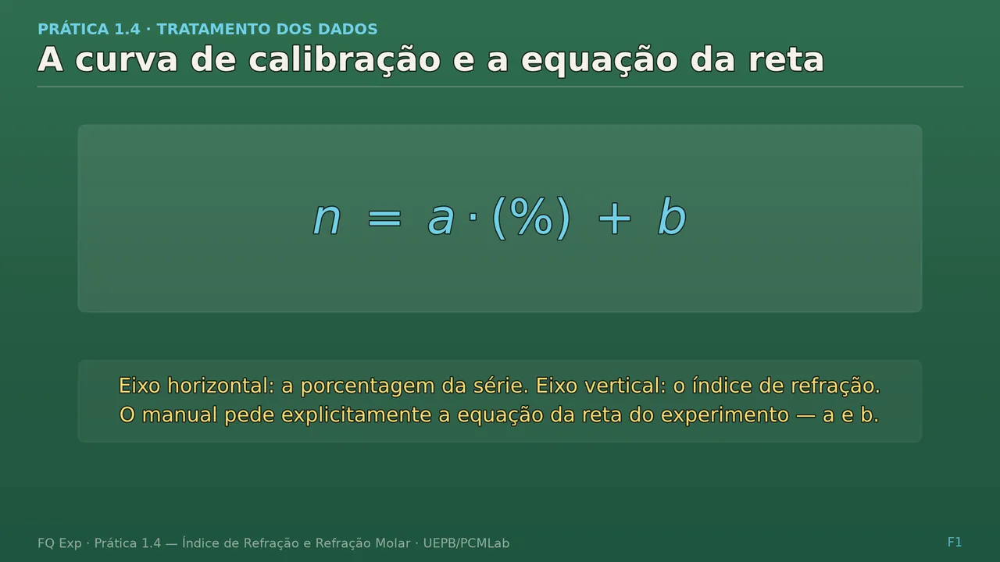
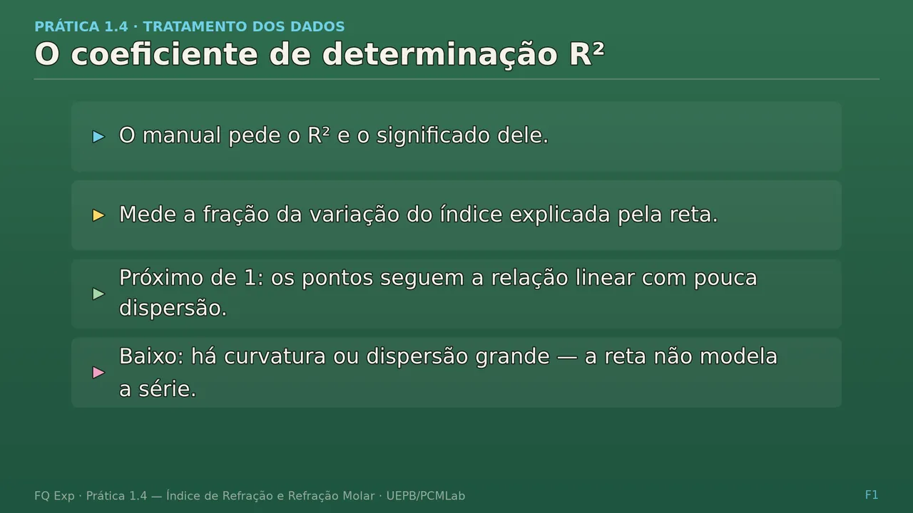
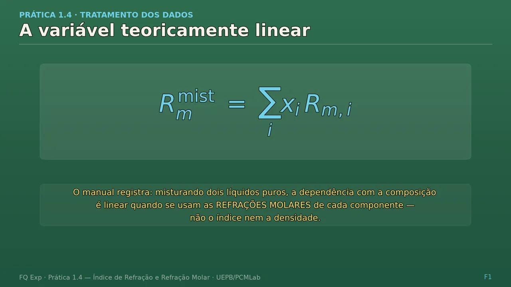
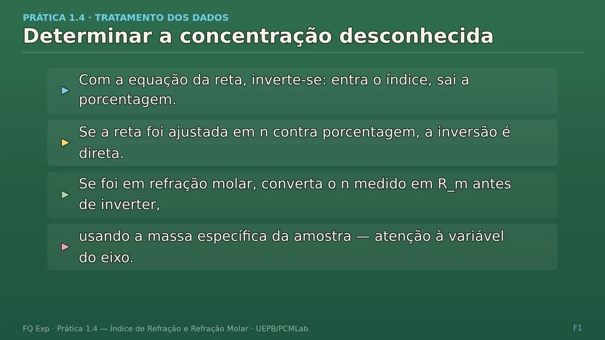
No tratamento, o primeiro trabalho é construir a curva de calibração de cada série: no eixo horizontal a porcentagem, no vertical o índice de refração. Ajustam-se os pontos por uma reta, e o manual pede explicitamente a equação da reta — o coeficiente angular e o linear que melhor descrevem os pontos medidos.
O manual também pede o parâmetro R ao quadrado e o significado dele. Ele mede a fração da variação do índice explicada pela reta. Perto de um, os pontos seguem a relação linear com pouca dispersão; baixo, há curvatura ou dispersão grande, e a reta não é um bom modelo para aquela série.
▸ MONITOR(A) DO PCM LAB: E como é que eu sei se a minha reta ficou boa? Se os pontos ficarem muito espalhados, a reta ainda vale, ou quer dizer que eu tenho que refazer a série?
Há ainda a refração molar da mistura. O manual registra que, misturando dois líquidos puros, a dependência com a composição é linear quando se usam as refrações molares de cada componente. Ou seja: medindo índice e massa específica de cada ponto, calcula-se a refração molar da mistura por Lorentz-Lorenz e verifica-se a linearidade. A variável teoricamente linear é a refração molar, não o índice.
E o objetivo final: com a equação da reta, determina-se a concentração da amostra desconhecida invertendo a equação — entra-se com o índice e sai-se com a porcentagem. Mas atenção à variável: se a reta foi ajustada em índice contra porcentagem, a inversão é direta; se o ajuste foi em refração molar, é preciso converter o índice medido em refração molar antes de inverter, usando a massa específica da amostra.
Os três erros que dominam
23:57 · 97s · 6 ações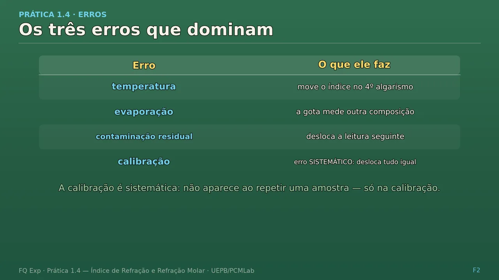
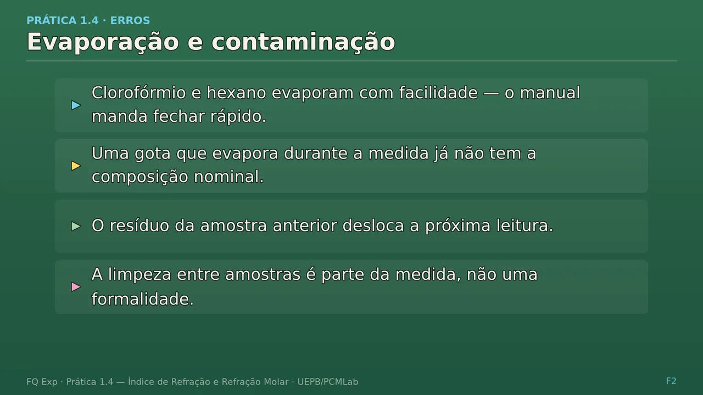
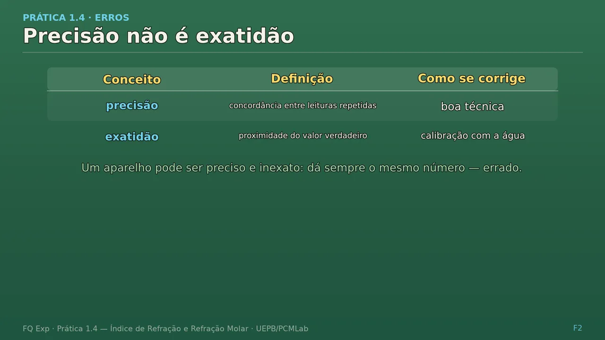
Três fontes de erro dominam. A primeira é a temperatura: o índice cai com o aquecimento, e como a escala é lida até a quarta casa, um grau já desloca o último algarismo. Por isso o manual manda ler a temperatura junto com a calibração, e por isso toda a série tem de ser feita na mesma condição térmica.
A segunda é a evaporação, agravada pela contaminação. Clorofórmio e hexano evaporam com facilidade, e o manual manda fechar o conjunto rapidamente justamente por isso. E o resíduo da amostra anterior desloca a leitura seguinte: a limpeza entre amostras é parte da medida, não formalidade.
A terceira é a calibração, e ela é sistemática. Como a água é o padrão, um erro na calibração desloca todas as leituras igualmente, e não aparece ao repetir a medida de uma amostra. Separe precisão de exatidão: precisão é a concordância entre leituras repetidas; exatidão é a proximidade do valor verdadeiro, e depende da calibração.
Recapitulando o essencial
25:34 · 150s · 9 ações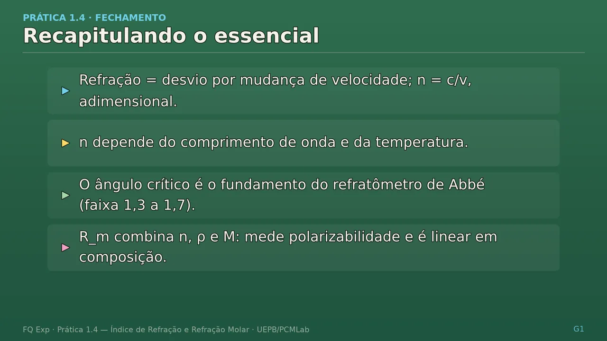
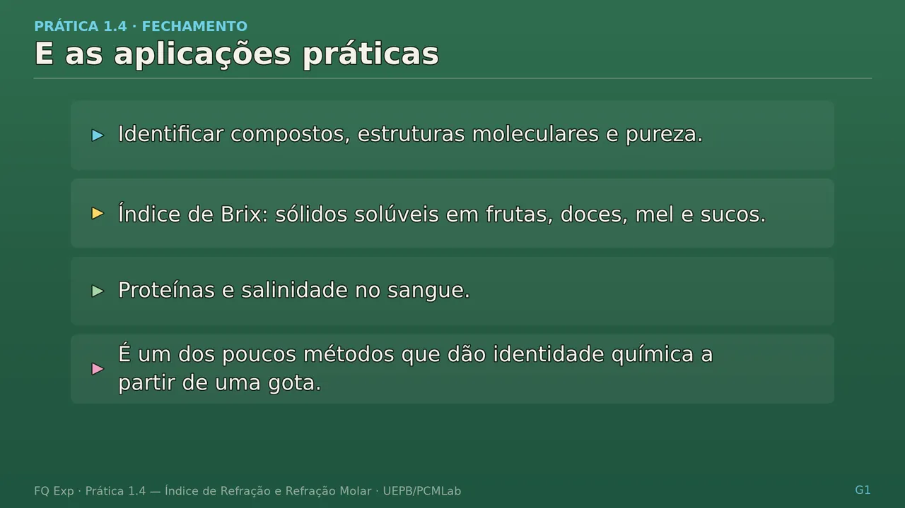
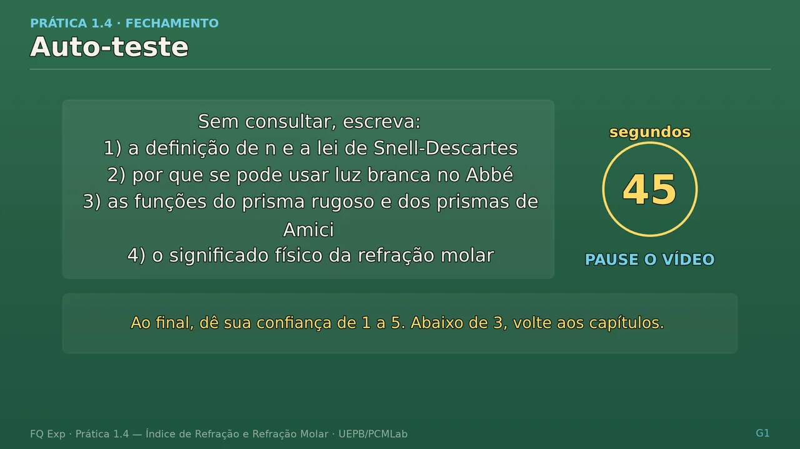
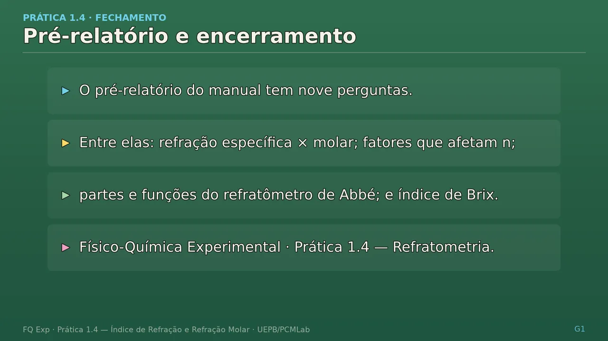
Recapitulando. Refração é o desvio de direção por mudança de velocidade, e o índice é a razão entre as velocidades — adimensional, dependente do comprimento de onda e da temperatura. O ângulo crítico é o fundamento do refratômetro de Abbé, que o transforma em leitura direta de índice na faixa de um vírgula três a um vírgula sete.
Combinando índice, massa específica e massa molar chega-se à refração molar, que mede a polarizabilidade e é a variável linear em composição — é ela que dá fundamento à curva de calibração. E o índice de Brix, em gramas de sacarose por cem gramas de solução, é a aplicação mais difundida da refratometria.
Auto-teste, sem consultar: a definição de índice de refração e a lei de Snell-Descartes; por que se pode usar o refratômetro de Abbé com luz branca; as funções do prisma inferior rugoso e dos prismas de Amici; e o significado físico da refração molar, a partir das suas unidades. Dê sua confiança de um a cinco.
PAUSE E PENSE Pause o vídeo e responda antes de continuar.
E prepare o pré-relatório, que o manual lista em nove perguntas: o que é índice de refração; a diferença entre refração específica e molar; entre reflexão e refração; o que é polarizabilidade; os fatores que afetam o índice; a destinação do refratômetro de Abbé com suas partes e funções; a lei de Snell-Descartes; a finalidade do experimento; e o que é índice de Brix, com exemplo do dia a dia. Físico-Química Experimental, prática um ponto quatro, refratometria. Até a próxima.